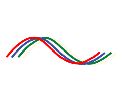

Hello! Welcome to diekus' web space
I am diekus, an engineer and researcher from the beautiful country of Costa Rica. I am currently based in the lovely London, working with the Samsung Internet Developer Relations Team at Samsung's UK R&D Institute. I am also a student & researcher at Universitat Autònoma de Barcelona, investigating on 3D user interfaces, you can see part of our work below!latest presentations
 Clustering to Categorize Desirability in Software
Clustering to Categorize Desirability in Software

QoMEX 2016
Exploring the Introduction of Stereo Depth in Applications to Change Perceived Quality
 S3Doodle: S3D GUI and User Content Creation
S3Doodle: S3D GUI and User Content Creation Let's not bore Alice: Stereo 3D Applications
Let's not bore Alice: Stereo 3D Applications Articulating the Third Dimension Online
Articulating the Third Dimension Online